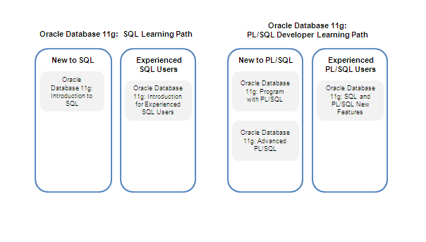

A Oracle oferece um treinamento completo para o desenvolvimento em SQL e PL/SQL. Existem duas programações de estudo que fornecem um plano curricular eficaz para usuários com ou sem experiência em SQL e PL/SQL. Os cursos nas duas programações de estudo usarão o SQL Developer como a ferramenta gráfica para o desenvolvimento de banco de dados.
Com a Programação de Estudo SQL, você aprende as principais instruções SQL que são usadas na maioria das vezes. Você também obtém conhecimento avançado para ajustar as instruções SQL a uma performance ideal, bem como para usar as instruções SQL analíticas para o armazenamento de dados.
Com a Programação de Estudo PL/SQL, você aprende as principais instruções PL/SQL que são usadas na maioria das vezes, assim como os tópicos de programação avançada. Você também aprender a gravar programas de aplicações que são seguros.
|  |
Além de uma variedade de cursos em sala de aula, a Oracle oferece um treinamento baseado na Web por meio da Oracle University Online Library. Este serviço prático inclui uma série de títulos que ensinam sobre as tecnologias de ponta da Oracle.